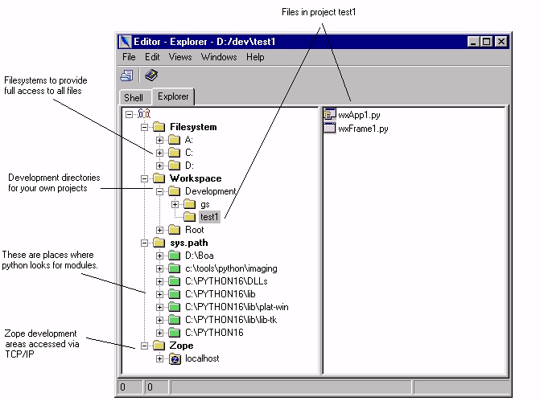

| Getting Started Guide for Boa Constructor |
| Getting Started Guide for Boa Constructor |
The Editor form contains a pane called the Explorer pane. You use this pane to find files and organise projects on your system.
The Explorer shows filesystems and development directories from your operating systems. You must configure where to look using the configuration file Explorer.msw.cfg on Windows or Explorer.gtk.cfg on UNIX.
The python directories are taken from the environment variable PYTHONPATH, and then default locations as compiled into your Python runtime system.
If you are using Zope, you can access projects in your Zope Server using the Zope option. The default TCP/IP connection information is configured in your Explorer configuration file, Explorer.msw.cfg on Windows or Explorer.gtk.cfg on UNIX.
| Getting Started Guide for Boa Constructor |